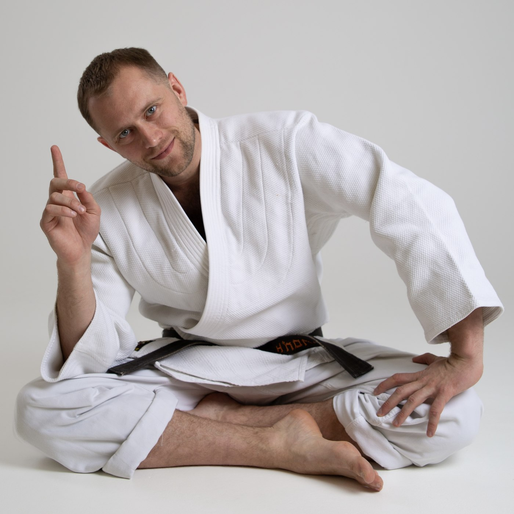
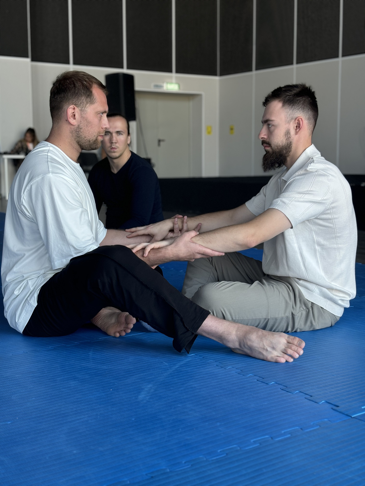
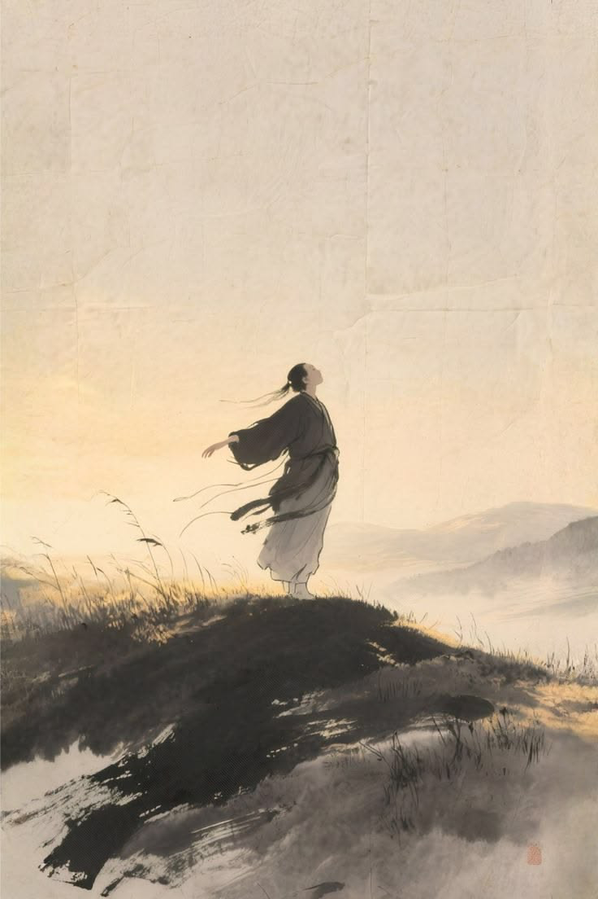
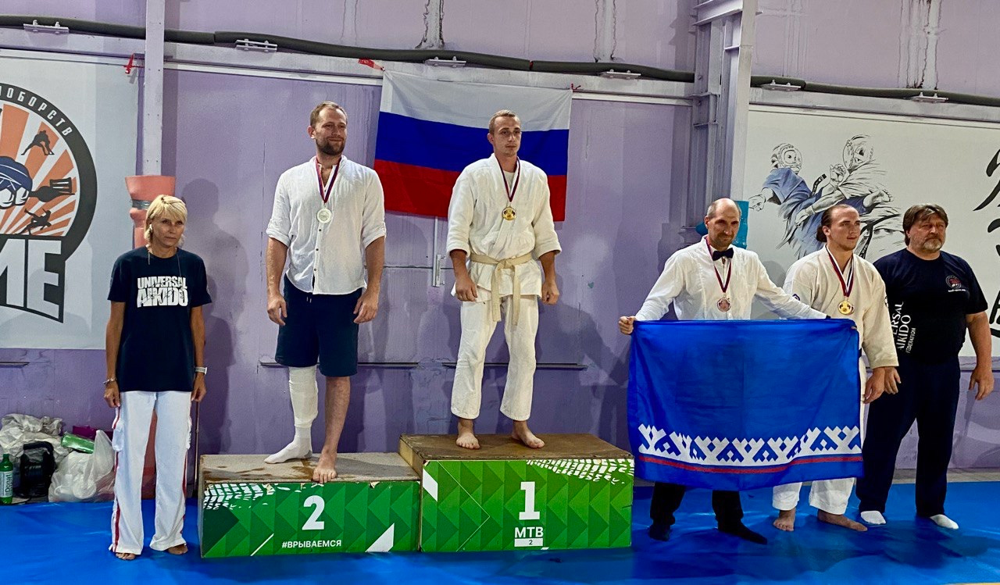

Тело
Гармоничное развитие организма, опорно-двигательного аппарата и восстановительных процессов.
Система комплексного развития человека, в которой традиции движения соединяются с современным взглядом на состояние организма.
Узнать о системе
О системе
Оздоровительная гимнастика Ивана Егорова объединяет опыт древних боевых искусств, современные знания о работе организма и технологии оценки психофизического состояния.
Практика помогает укреплять здоровье, развивать внутренние ресурсы и выстраивать внимательное отношение к телу и образу жизни.
Как это работает
Простые, безопасные и естественные упражнения с постепенным развитием без чрезмерной нагрузки.
Гармоничное развитие организма, опорно-двигательного аппарата и восстановительных процессов.
Концентрация, эмоциональное равновесие, сон и способность замечать состояние здесь и сейчас.
Постепенное раскрытие физических и внутренних возможностей, движение к своей оптимальной версии.

Регулярная практика
Результат складывается из регулярности, индивидуального подхода и постепенного развития.
Для кого
Система адаптируется под уровень подготовки и может быть полезна детям, подросткам, взрослым, людям старшего возраста, спортсменам и тем, кто ведёт малоподвижный образ жизни.

Восстановление
Одно из направлений системы. Помощь организму в восстановлении после физических нагрузок и травм. Практический опыт Ивана Егорова показывает, как комплекс упражнений может быть частью возвращения к полноценной активности.
При травмах и состояниях, требующих лечения, практика используется только вместе с рекомендациями медицинских специалистов.

Современные технологии
Эффективность практики исследуется совместно с лабораторией Александра Кузнецова с применением технологии нейродетекции.
9 каналовпортативный нейродетектор регистрирует активность головного мозга в реальном времени.
Анализинтеллектуальная система помогает отслеживать изменения психофизического состояния.
Динамикаколичественные данные позволяют наблюдать реакцию организма на практику.
Вопросы и ответы
Да. Практика строится от простого к сложному: нагрузка подстраивается под уровень, возраст и самочувствие каждого участника.
Индивидуально или в небольшой группе. Разминка, суставная работа, дыхательные практики и разбор техники под ваш запрос.
Удобная одежда и желание двигаться. Специальная форма и инвентарь не требуются.
Москва, очные занятия по записи; отдельные форматы доступны онлайн. Удобное время согласуем в переписке.
Практика мягкая и адаптируется под состояние. При хронических заболеваниях напишите заранее — соберём щадящий вариант.
Будущее системы
Задача системы — сделать методы укрепления здоровья доступными каждому и поддержать формирование физически здорового, психологически устойчивого общества.
Связаться с командой проекта